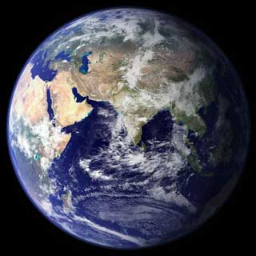

<!DOCTYPE html>
<html lang='en'>
  <head>
    <title>Test</title>
    <meta charset='utf-8'>
    <meta name='viewport' content='width=device-width, initial-scale=1'>
<style>
  body { background-color: yellowgreen;}
  .masked {
    width: 100px;
    height: 100px;
    background-color: #8cffa0;
    -webkit-mask-image: url(test.svg);
    mask-image: url(test.svg);
    mask-repeat: no-repeat;
  }

  .mask {
    /* width: 480px;
    height: 270px;
    background-color: #4c56c3; */
    /* -webkit-mask-type: luminance; */
    /* -webkit-mask-image: url(image/frog.jpg);
    -webkit-mask-mode: luminance; */
    /* mask-type: luminance; */
    
    
    
  }
    
</style>
  </head>
  <body>
<svg version="1.1" xmlns="http://www.w3.org/2000/svg" width="480" height="270" viewBox="0 0 480 270">
  <defs>
    <!-- <image id="my-image" href="./image/frog.jpg" width="320" height="240" x="0" y="0" />
   
    <mask id="my-mask">
     <image href="./image/frog.jpg" width="320" height="240" x="0" y="0" />
    </mask> -->
    <clippath id="temporary--l8ywqzgp-4ueybezugpu">
      <path fill="#FFFFFF"
        d="M834.1 469.2A347.49 347.49 0 0 0 751.2 354l-29.1-26.7a8.09 8.09 0 0 0-13 3.3l-13 37.3c-8.1 23.4-23 47.3-44.1 70.8-1.4 1.5-3 1.9-4.1 2-1.1.1-2.8-.1-4.3-1.5-1.4-1.2-2.1-3-2-4.8 3.7-60.2-14.3-128.1-53.7-202C555.3 171 510 123.1 453.4 89.7l-41.3-24.3c-5.4-3.2-12.3 1-12 7.3l2.2 48c1.5 32.8-2.3 61.8-11.3 85.9-11 29.5-26.8 56.9-47 81.5a295.64 295.64 0 0 1-47.5 46.1 352.6 352.6 0 0 0-100.3 121.5A347.75 347.75 0 0 0 160 610c0 47.2 9.3 92.9 27.7 136a349.4 349.4 0 0 0 75.5 110.9c32.4 32 70 57.2 111.9 74.7C418.5 949.8 464.5 959 512 959s93.5-9.2 136.9-27.3A348.6 348.6 0 0 0 760.8 857c32.4-32 57.8-69.4 75.5-110.9a344.2 344.2 0 0 0 27.7-136c0-48.8-10-96.2-29.9-140.9z"
        transform="scale(0.263671875,0.263671875)" transform-origin="top left"
        vector-effect="non-scaling-stroke;">
      </path>
    </clippath>
  </defs>
    <!-- <foreignObject width="480" height="270" x="0" y="0" mask="url(#my-mask)" mask-mode="luminance">
      <video src="./video/rgb.mp4" width="480" height="270"></video>
    </foreignObject> -->
    <!-- <polygon points="66,0 336,0 336,270 66,270 66,0" fill="blue"></polygon> -->
    
  <!-- <image href="./image/frog.jpg" width="200" height="200" x="100" y="100" clip-path="url(#my-clip-path)" mask-mode="luminance"/> -->
  <!-- <circle cx="50" cy="50" r="50" fill="yellow"/> -->
</svg>

<!-- <div class="masked"></div> -->

<!-- <div style="mask-image: url(video/rgb.mp4); mask-mode: luminance; mask-repeat: no-repeat;">
  
  <video src="image/frog.jpg" width="480" height="270"></video>
</div>
   -->
<div style="clip-path: url(#temporary--l8ywqzgp-4ueybezugpu); ">
  <video src="./video/rgb.mp4" width="480" height="270"></video>
  <!--  -->
</div>
  
</body>
</html>